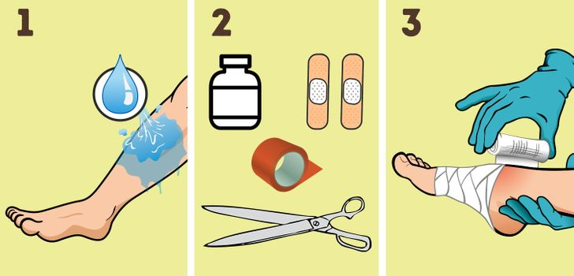

1. Cortes e Arranhões
Lave a área afetada com água e sabão neutro. Aplique um antisséptico para prevenir infecções. Cubra com um curativo limpo e seco. Troque o curativo diariamente e observe sinais de infecção, como vermelhidão ou pus.

Lave a área afetada com água e sabão neutro. Aplique um antisséptico para prevenir infecções. Cubra com um curativo limpo e seco. Troque o curativo diariamente e observe sinais de infecção, como vermelhidão ou pus.